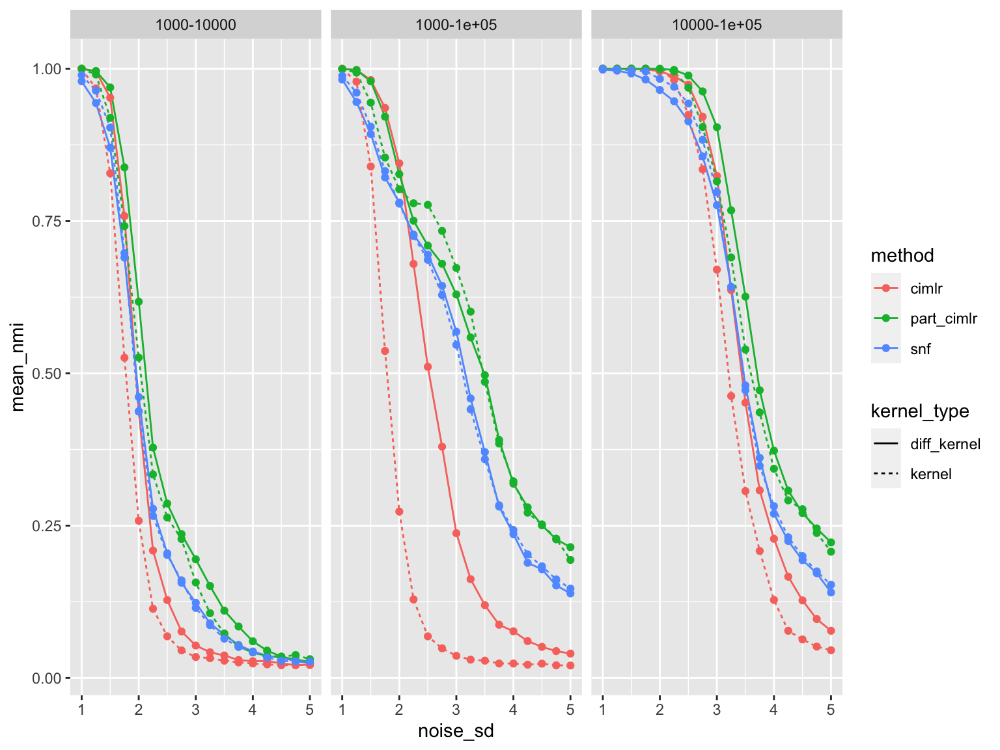
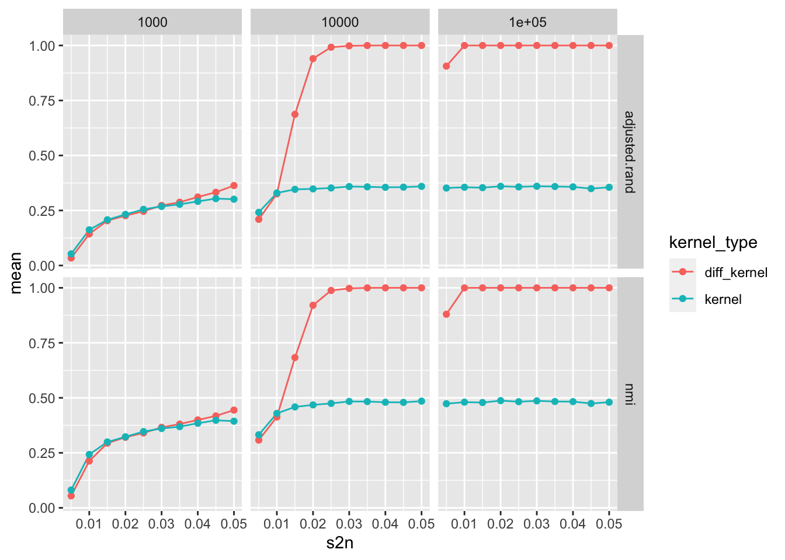

simulation_notebook
yuqimiao
2022-09-30
Last updated: 2022-10-12
Checks: 7 0
Knit directory: DEP_SIMLR/
This reproducible R Markdown analysis was created with workflowr (version 1.6.2). The Checks tab describes the reproducibility checks that were applied when the results were created. The Past versions tab lists the development history.
Great! Since the R Markdown file has been committed to the Git repository, you know the exact version of the code that produced these results.
Great job! The global environment was empty. Objects defined in the global environment can affect the analysis in your R Markdown file in unknown ways. For reproduciblity it’s best to always run the code in an empty environment.
The command set.seed(20221003) was run prior to running the code in the R Markdown file. Setting a seed ensures that any results that rely on randomness, e.g. subsampling or permutations, are reproducible.
Great job! Recording the operating system, R version, and package versions is critical for reproducibility.
Nice! There were no cached chunks for this analysis, so you can be confident that you successfully produced the results during this run.
Great job! Using relative paths to the files within your workflowr project makes it easier to run your code on other machines.
Great! You are using Git for version control. Tracking code development and connecting the code version to the results is critical for reproducibility.
The results in this page were generated with repository version 4e4fa58. See the Past versions tab to see a history of the changes made to the R Markdown and HTML files.
Note that you need to be careful to ensure that all relevant files for the analysis have been committed to Git prior to generating the results (you can use wflow_publish or wflow_git_commit). workflowr only checks the R Markdown file, but you know if there are other scripts or data files that it depends on. Below is the status of the Git repository when the results were generated:
Ignored files:
Ignored: .DS_Store
Ignored: .Rhistory
Ignored: .Rproj.user/
Ignored: code/.DS_Store
Untracked files:
Untracked: code/simulation_scripts/
Unstaged changes:
Modified: code/functions/Partition_CIMLR_2.0.R
Modified: code/functions/visualization_functions.R
Deleted: code/simu_220930.R
Deleted: code/simu_220930_analysis.R
Note that any generated files, e.g. HTML, png, CSS, etc., are not included in this status report because it is ok for generated content to have uncommitted changes.
These are the previous versions of the repository in which changes were made to the R Markdown (analysis/simulation_notebook.rmd) and HTML (docs/simulation_notebook.html) files. If you’ve configured a remote Git repository (see ?wflow_git_remote), click on the hyperlinks in the table below to view the files as they were in that past version.
| File | Version | Author | Date | Message |
|---|---|---|---|---|
| Rmd | 4e4fa58 | yuqimiao | 2022-10-12 | update |
| Rmd | af20278 | yuqimiao | 2022-10-06 | refine update_neig in part_cimlr |
| html | 678b129 | yuqimiao | 2022-10-06 | Build site. |
| Rmd | 5e867c8 | yuqimiao | 2022-10-06 | update |
| Rmd | f61c69a | yuqimiao | 2022-10-05 | change simu_220930 |
| Rmd | ca0d286 | yuqimiao | 2022-10-05 | simu_220930 analysis |
| html | 24ffb84 | yuqimiao | 2022-10-03 | Build site. |
| Rmd | e0d8c2c | yuqimiao | 2022-10-03 | update |
| html | 18d5b0e | yuqimiao | 2022-10-03 | Build site. |
| Rmd | 53fd9ff | yuqimiao | 2022-10-03 | update |
Introduction
library(tidyverse)── Attaching packages ─────────────────────────────────────── tidyverse 1.3.0 ──✓ ggplot2 3.3.5 ✓ purrr 0.3.4
✓ tibble 3.1.3 ✓ dplyr 1.0.7
✓ tidyr 1.1.3 ✓ stringr 1.4.0
✓ readr 1.3.1 ✓ forcats 0.5.0── Conflicts ────────────────────────────────────────── tidyverse_conflicts() ──
x dplyr::filter() masks stats::filter()
x dplyr::lag() masks stats::lag()# need to connect to cluster220930 4 clusters
Basic setting:
The setting is to have 4 clusters in total. Dataset 1 separates clusters (1+2) from 3, and 4. Dataset 2 separates clusters 1, 2 and (3+4). That is, using dataset 1 or 2 only, you can detect 3 clusters, although 2 sets of three different clusters. Only when you use both datasets 1 and 2, you can detect 4 clusters. This way, the overlapping information of the 2 datasets are, clusters (1+2) from clusters (3+4). The unique information of dataset 1 is to separate cluster 1 and 2. The unique information of dataset 2 is to separate cluster 3 and 4.
Parameters:
- n_feat1 = 1000
- n_feat2 = 100000
- mu1 = c(0, 0, 1, -1)
- mu2 = c(1,-1,0,0)
# data read in
dir = "/Volumes/sw2206/yuqi/simu_220930"
# files = list.files(dir)
# tib_all = NULL
# for(i in 1:length(files)){
# tib = readRDS(paste(dir,"/", files[i], sep = ""))
# tib_all = rbind(tib_all, tib)
# }
# saveRDS(tib_all, paste(dir, "/all_data.rds", sep = ""))
tib_all = readRDS(paste(dir, "/all_data.rds", sep = ""))
tib_all %>% unnest(res_tib) %>%
group_by(noise_sd, kernel, method) %>%
summarize(mean_nmi = mean(nmi),
sd_nmi = sd(nmi)) %>%
mutate(kernel = factor(kernel, levels = c("kernel", "diff_kernel"))) %>%
ggplot(aes(x = noise_sd, y = mean_nmi, color = method))+
geom_line(aes(linetype=kernel, color = method))+
# geom_errorbar(aes(ymin=mean_nmi-sd_nmi, ymax=mean_nmi+sd_nmi), width=.2)
geom_point()`summarise()` has grouped output by 'noise_sd', 'kernel'. You can override using the `.groups` argument.
From above, we can see that the diffusion actually decrease the performance of part-cimlr when the noise is large. One potential improvement is to update the eigenvector used for single data partition information.
220930-extension 4 cluster
Here we extend the 4 cluster scenario in 220930 in terms of the following terms: 1. Trial of part-cimlr with the update_c, i.e, with only informative eigenvecros as partition information, to see if the performance of the diffusion version of part-cimlr is improving 2. Extend the noise_sd to see the overall performance: noise_sd_all = c(1, 1.25, 1.75, 2, 2.25, 2.5, 2.75, 3, 3.25, 3.5, 3.75, 4)
# data read in
dir = "/Volumes/sw2206/yuqi/simu_220930_2"
# files = list.files(dir)
# tib_all = NULL
# for(i in 1:length(files)){
# tib = readRDS(paste(dir,"/", files[i], sep = ""))
# tib_all = rbind(tib_all, tib)
# }
# saveRDS(tib_all, paste(dir, "/all_data.rds", sep = ""))
tib_all = readRDS(paste(dir, "/all_data.rds", sep = ""))
tib_all %>% unnest(res_tib) %>%
group_by(noise_sd, kernel, method) %>%
summarize(mean_nmi = mean(nmi),
sd_nmi = sd(nmi)) %>%
mutate(kernel = factor(kernel, levels = c("kernel", "diff_kernel"))) %>%
ggplot(aes(x = noise_sd, y = mean_nmi, color = method))+
geom_line(aes(linetype=kernel, color = method))+
# geom_errorbar(aes(ymin=mean_nmi-sd_nmi, ymax=mean_nmi+sd_nmi), width=.2)
geom_point()`summarise()` has grouped output by 'noise_sd', 'kernel'. You can override using the `.groups` argument.
| Version | Author | Date |
|---|---|---|
| 678b129 | yuqimiao | 2022-10-06 |
From the simulation result, we can see that the performance of part_cimlr_up has a sharp drop when the noise_sd increase to 3.25 from 3. I start a new notebook here to illustrate the possible reasons and improvement. In a word, once we want to use eigenvector to represents the similarity matrix/GL matrix, we need to use eigengap to find the eigenvectors actually contains information.
But when the information contained in the data is vague, the eigen gap is invalid. The max gap is occured randomly. Thus we need to further explore the eigenvectors to use as partition information. Currently reading Dataspectropy, Shi, 2009
221012 4 clusters
From the simulation above, we see the effect of diffusion and partition cimlr. But how each strategy contributes is still a bit vague. In this simulation, we aim to verify our 2 assumption on the effect of 2 strategies:
- Diffusion helps denoise on the single data level, capturing the larger, clearer structure
- Partition-level integration can help to handle the heterogeneity of dimensions in different data types
221012_1 effect of diffusion
dir = "/Volumes/sw2206/yuqi/simu_221012_1"
# files = list.files(dir)
# tib_all = NULL
# for(i in 1:length(files)){
# tib = readRDS(paste(dir,"/", files[i], sep = ""))
# tib_all = rbind(tib_all, tib)
# }
# saveRDS(tib_all, paste(dir, "/all_data.rds", sep = ""))
tib_all = readRDS(paste(dir, "/all_data.rds", sep = ""))tib_all %>%
group_by(n_feat, noise_sd, kernel_type) %>%
summarize(mean_nmi = mean(nmi)) %>%
ggplot(aes(x = noise_sd, y = mean_nmi, color = kernel_type, group = kernel_type))+
geom_line()+
geom_point()+
facet_grid(n_feat~.)`summarise()` has grouped output by 'n_feat', 'noise_sd'. You can override using the `.groups` argument.
221012_2 effect of partition-level
dir = "/Volumes/sw2206/yuqi/simu_221012_2"
# dir = "simu_221012_2"
# files = list.files(dir)
# tib_all = NULL
# for(i in 1:length(files)){
# file_cur = paste(dir,"/", files[i], sep = "")
# if(file.exists(file_cur)){
# tib = readRDS(file_cur) %>% unnest(res_tib) %>% dplyr::select(-res_list)
# tib_all = rbind(tib_all, tib)
# print(i)
# }else{
# print(paste("file",file_cur,"does not exist!!!!!"))
# }
# }
# saveRDS(tib_all, paste(dir, "/all_data.rds", sep = ""))
tib_all = readRDS(paste(dir, "/all_data.rds", sep = ""))simu_tib = simu_tib =tibble(scenario = 1:4,
n_feat1 = c(1000, 1000, 10000, 1000),
n_feat2 = c(10000, 100000, 100000, 10000),
n_feat3 = c(NA,NA,NA, 100000)) %>%
mutate(tib = map(scenario, function(s){
tibble(noise_sd = seq(1,5,0.25))
})) %>% unnest(tib) %>%
mutate(scenario = seq_along(scenario))
mean_tib = tib_all %>%
mutate(simu_id = (simu_id-1)%/%100+1) %>%
left_join(simu_tib, by = c("simu_id" = "scenario")) %>%
mutate(noise_sd = noise_sd.x, kernel_type = kernel) %>%
dplyr::select(-noise_sd.y, -kernel) %>%
group_by(n_feat1,n_feat2, n_feat3, noise_sd, kernel_type, method) %>%
summarize(mean_nmi = mean(nmi)) %>%
mutate(comb = ifelse(is.na(n_feat3), paste(n_feat1, n_feat2, sep = "-"), paste(n_feat1, n_feat2, n_feat3, sep = "-")))`summarise()` has grouped output by 'n_feat1', 'n_feat2', 'n_feat3', 'noise_sd', 'kernel_type'. You can override using the `.groups` argument.2 data integration, with increasing noise sd
mean_tib %>%
filter(comb!="1000-10000-1e+05") %>%
filter(method!="part_cimlr_up") %>%
ggplot(aes(x = noise_sd, y = mean_nmi, color = method))+
geom_line(aes(linetype=kernel_type, color = method))+
geom_point()+
facet_wrap(~comb, nrow = 1)
2 data integration v.s. 3 data integration
mean_tib %>%
filter(comb %in% c("1000-10000","1000-10000-1e+05")) %>%
filter(method!="part_cimlr_up") %>%
ggplot(aes(x = noise_sd, y = mean_nmi, color = method))+
geom_line(aes(linetype=kernel_type, color = method))+
geom_point()+
facet_wrap(~comb, nrow = 1)
sessionInfo()R version 3.6.2 (2019-12-12)
Platform: x86_64-apple-darwin15.6.0 (64-bit)
Running under: macOS 10.16
Matrix products: default
BLAS: /Library/Frameworks/R.framework/Versions/3.6/Resources/lib/libRblas.0.dylib
LAPACK: /Library/Frameworks/R.framework/Versions/3.6/Resources/lib/libRlapack.dylib
locale:
[1] en_US.UTF-8/en_US.UTF-8/en_US.UTF-8/C/en_US.UTF-8/en_US.UTF-8
attached base packages:
[1] stats graphics grDevices utils datasets methods base
other attached packages:
[1] forcats_0.5.0 stringr_1.4.0 dplyr_1.0.7 purrr_0.3.4
[5] readr_1.3.1 tidyr_1.1.3 tibble_3.1.3 ggplot2_3.3.5
[9] tidyverse_1.3.0 workflowr_1.6.2
loaded via a namespace (and not attached):
[1] Rcpp_1.0.8.3 lubridate_1.7.8 assertthat_0.2.1 rprojroot_2.0.2
[5] digest_0.6.27 utf8_1.2.2 R6_2.5.0 cellranger_1.1.0
[9] backports_1.2.1 reprex_0.3.0 evaluate_0.14 httr_1.4.2
[13] highr_0.8 pillar_1.6.2 rlang_0.4.11 readxl_1.3.1
[17] rstudioapi_0.13 whisker_0.4 rmarkdown_2.1 labeling_0.4.2
[21] munsell_0.5.0 broom_0.7.6 compiler_3.6.2 httpuv_1.5.5
[25] modelr_0.1.6 xfun_0.22 pkgconfig_2.0.3 htmltools_0.5.1.1
[29] tidyselect_1.1.1 fansi_0.5.0 crayon_1.4.1 dbplyr_1.4.2
[33] withr_2.4.2 later_1.1.0.1 grid_3.6.2 jsonlite_1.7.2
[37] gtable_0.3.0 lifecycle_1.0.0 DBI_1.1.0 git2r_0.26.1
[41] magrittr_2.0.1 scales_1.1.1 cli_3.0.1 stringi_1.5.3
[45] farver_2.1.0 fs_1.5.0 promises_1.2.0.1 xml2_1.3.2
[49] ellipsis_0.3.2 generics_0.1.0 vctrs_0.3.8 tools_3.6.2
[53] glue_1.4.2 hms_1.1.0 yaml_2.2.1 colorspace_2.0-2
[57] rvest_0.3.5 knitr_1.32 haven_2.3.1